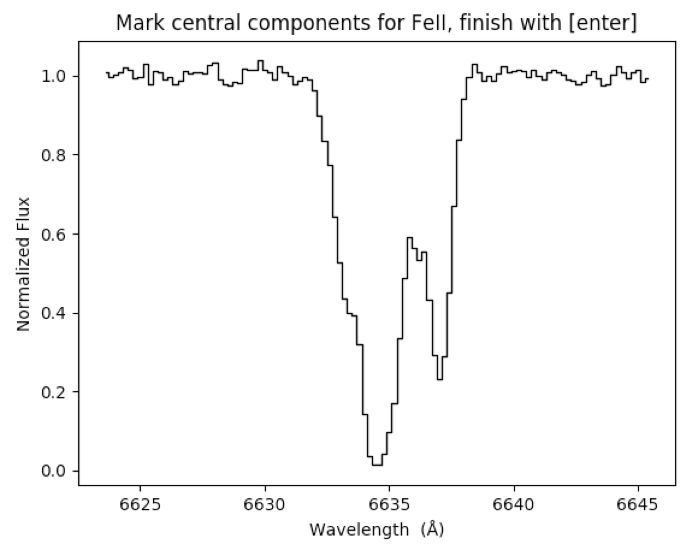
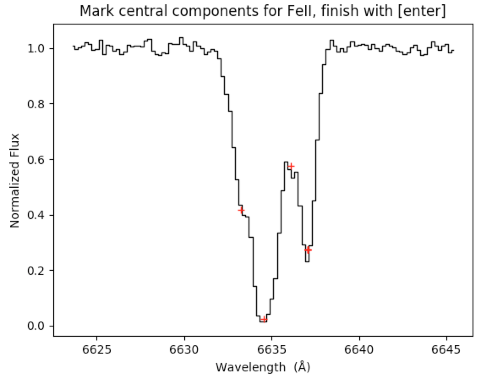
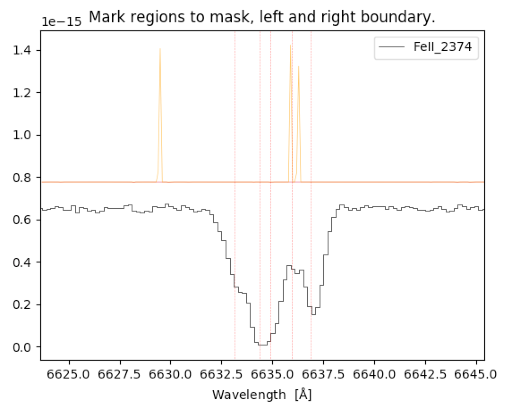
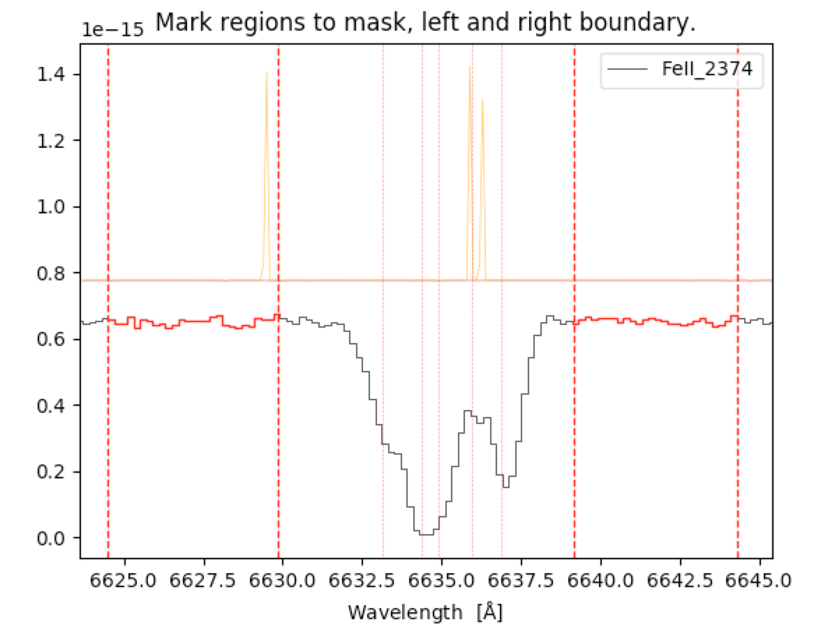

____ _ _________________________________________
\/ \ _/\ /
\/ \ / oigtFit
\/
VoigtFit Parameter Language¶
The program can be run directly from terminal using a parameter input file to tell VoigtFit what to do:
%] VoigtFit input_filename
The parameter file consists of a set of easy to read statements that define things such as the data to fit, atomic or molecular transitions, or the component structure. All the statements are meant to be relatively intuitive and can be written rather freely in the so-called VoigtFit parameter language.
This language allows the user to define parameters without using python scripting which has a slightly more complex syntax. There are a few general rules for the parameter language:
Everything that comes after a # sign is regarded as a comment and is not parsed.
The number of spaces in a given line between parameters and values is not important.
The order of the statements is not important either. This will be handled by the program at runtime, so you can freely arrange the parameter file as you see fit.
All optional arguments below are stated in square brackets.
Double underscores below indicate an optional keyword argument to be given by the user.
Note
A parameter file template can be created in your working directory
by running VoigtFit with no arguments.
Many of the statements are optional, but there is a subset of statements that must be present in the file. If these are not present in the parameter file, or if their values are not understood, the program will cause an error. A minimal working example of all the mandatory statements looks something like this:
This is all you need to get started. The rest is an interactive and iterative process, which VoigtFit makes easy for you.
All the available statements that can be included (and parsed) in the parameter file are presented in detail below. For a quick overview of available statements look in the table of contents.
A set of predefined input parameter files are available in the test_data folder on github.
Name¶
name : dataset_name
dataset_name gives the name of the dataset. The dataset is automatically saved (as
dataset_name.hdf5), and if a dataset of the given name is present in the working directory, it will be loaded automatically. The current dataset can be overwritten by running VoigtFit with the option-f.
Save¶
save : [ filename ]
filename is the filename used for the graphic output and for parameter output. If no filename is given, the dataset name attribute will be used. The graphic output will be saved in pdf format and the parameter files will be saved as ascii files: The best-fit parameters will be saved to filename.fit and the best-fit continuum parameters will be saved to filename.cont.
z_sys¶
z_sys : z_sys
z_sys gives the systemic redshift of the absorption system. Relative velocities are calculated with respect to this redshift.
Data¶
data filename resolution [ norm air no-mask nsub=1 ext=None]
filename specifies the path to the spectrum The file should be an ASCII table with up to four columns: wavelength, flux, error, mask separated by blank spaces or a FITS file. See documentation of fitsutil for details about allowed FITS extensions and formats.
resolution is the spectral resolution of the given spectrum in units of km/s. Alternatively, the resolution can be given as a string pointing to a file containing the line-spread function (LSF) for the given spectrum. The file format should follow that laid out by the HST/COS instrument. The first line gives wavelength in Angstrom and the column below each given wavelength defines the kernel in pixel space:
wl1
wl2
wl3
…
wlN
lsf11
lsf21
lsf31
…
lsfN1
lsf12
lsf22
lsf32
…
lsfN2
⋮
⋮
⋮
⋱
⋮
lsf1M
lsf2M
lsf3M
…
lsfNM
Optional arguments:
norm : if present in the line, this indicates that the spectrum in filename are normalized.
air : if present, the wavelengths in the spectrum will be converted from air to vacuum.
no-mask : if present, ignore any pixel mask present in the input data. VoigtFit will automatically try to identify pixel masks in the ASCII or FITS data, so if such automatically retrieved masks are not appropriate for the fitting, they can be ignored by setting including keyword.
nsub=1 : use this keyword to set the subsampling factor of the kernel given in the LSF file. The default value is 1, i.e., assuming that the sampling of the kernel matches the sampling of the data. If no LSF file is given as res then the keyword will be ignored.
ext=None : use this keyword to define which extension to use if there are several data extensions in the input FITS file. This is only relevant for FITS Table data. The extension can be given as the integer index or the extension name.
Example
data 'J2350-0052_uvb.tab' 40. air
This will load the data from the file named ‘J2350-0052_uvb.tab’, convert the wavelength column from air to vacuum, and assign a spectral resolution of 40 km/s.
data "norm_data/norm_2350-0052_vis.tab" 'lsf_file.dat' norm nsub=3
This will load the data from the file named ‘norm_2350-0052_vis.tab’ in the directory ‘norm_data’ and assign a wavelength dependent line spread function as given in the file ‘lsf_file.dat’. The keyword norm is present, so the data will be marked as normalized, and no interactive normalization will therefore pop up during data preparation. The keyword nsub is set to 3, stating that the kernels provided in the LSF file are subsampled by a factor of three relative to the data.
data 'sdss_spectrum.fits' 150. ext=4
This will load the data from the extension no. 4 of the file named ‘sdss_spectrum.fits’:
No. Name Ver Type Cards Dimensions Format 0 PRIMARY 1 PrimaryHDU 114 () 1 COADD 1 BinTableHDU 26 4601R x 8C [E, E, E, J, J, E, E, E] 2 SPALL 1 BinTableHDU 476 1R x 231C [13A, 14A, 4A, E, ..., E] 3 SPZLINE 1 BinTableHDU 48 31R x 19C [J, J, J, 13A, D, ..., E] 4 B1-001145... 1 BinTableHDU 166 2528R x 8C [E, E, E, J, E, E, E, E] 5 B1-001145... 1 BinTableHDU 166 2530R x 8C [E, E, E, J, E, E, E, E]
Lines¶
lines line_tags [ velspan=__ ]
line_tags can be a single line or multiple lines separated by blank spaces. The line tag should match a line in the line-list, e.g., FeII_2374, SiII_1526, or HI_1215. For the Lyman series of hydrogen and deuterium, the following notation is also accepted: HI_1 for the Ly-alpha, HI_3 for Ly-gamma, and so on. Multiple lines statements can be defined in the parameter file.
Optinal arguments:
velspan : the value after the equal-sign is taken as the velocity span in km/s around each line to be defined as a fitting region. The default span is 500 km/s.
Example
lines FeII_2260 FeII_2374 SiII_1808 HI_1215
This will define the two singly ionized iron transitions at 2260 and 2374Å together with the singly ionized silicon transition at 1808Å and the Ly-alpha line.
lines FeII_2374 SiII_1808
This will define the iron and silicon lines with default velocity spans.
lines HI_1 HI_2 velspan=5000
This will define the Ly-α and Ly-β lines with a larger 5000 km/s velocity span.
Limit [New!]¶
limit line_tags [ ref=__ nofit=False sigma=3 ]
line_tags can be a single line or multiple lines separated by blank spaces. The line tag should match a line in the line-list, e.g., FeII_2374, SiII_1526.
VoigtFit automatically determines the integration limits for the measurement of the equivalent width from a reference line. This reference line is chosen automatically by default, from the strongest line defined which has the same ionization state (e.g., FeII could be used for limits of NiII, TiII etc.; CIV for SiIV etc.).
If no reference line is found, the equivalent width will not calculated. The user can instead force a specific reference line with the keyword ref (see below). The output is printed to the terminal, and is also saved to a text file (’*.limits’).
Multiple limit statements can be defined in the parameter file.
Optional arguments:
ref : should be a line_tag that is already defined in the dataset by the lines statement. This will force VoigtFit to determine the integration limits from that given line.
nofit : the integration limits are by default determined from the best-fit profiles, when possible. The user can disable this and force VoigtFit to use the observed profile of the reference line to determine the integration limits.
sigma : determines the significance level of the derived limit as sigma times the uncertainty on the equivalent width within the integration limits.
Example
limit TiII_1910
This will determine a 3-sigma upper limit on the column density of TiII_1910 line using the strongest line defined by the lines statement. The upper limit together with the measured equivalent width and uncertainty is written to the output file (’*.limits’).
limit CI_1656 ref=CI_1656 sigma=2 nofit=True
The limit statement can also be used to measure equivalent widths of lines that are detected but not fitted: The statement above will determine a 2-sigma upper limit of the CI_1656 using itself as a reference to determine the integration limits. The measured equivalent width and uncertainty (as well as column density, assuming an optically thin line) are given in the output file (’*.limits’).
Fine-structure Lines¶
fine-lines ground_state [ levels velspan=__ ]
ground_state refers to the line identifier for the ground state transition of the line complex, e.g., ‘CI_1656’.
This statement, if present in the parameter file, will define all the corresponding transitions for the given levels of related to the given ground state. At the moment, these line complexes are only defined for neutral carbon (CI) and its two fine-structure levels.
Optional arguments:
levels : indicates which excited fine-structure levels to include. This should be given as a space separated list of letters: ‘a’ for the first excited level (J=1), ‘b’ for the second excited level (J=2), etc. By default, all fine-structure levels will be included.
velspan : the value after the equal-sign is taken as the velocity span in km/s around each line to be defined as a fitting region. The default span is 500 km/s.
Example
fine-lines CI_1560
This will define all the transitions of CI, CI* and CI** related to the ground state of the 2s2 2p2 3P → 2s 2p3 3D line complex at 1560 Å.
fine-lines CI_1328 a
This will only define the transitions of the ground state and the first excited fine-structure level (J=1) of the 2s2 2p2 3P → 2s 2p3 3P line complex at 1328 Å.
Important
Components have to be defined manually for the fine-structure levels. For this case, the ion to reference for the excited levels is the ground state ion (in the example above ‘CI’) with the lower case letter to designate the level, see the optional argument levels. So for the first fine-structure level of ‘CI’ the ion would be ‘CIa’.
For more details, see the section add components below.
Add Molecules¶
molecule element bands [ J=__ velspan=__ ]
element refers to the molecule to be fitted, for now only CO and H2 are defined in the database.
- bands designates a list of vibrational bands for the given molecule.
For CO: the A(ν) → X(0) bands for ν up to ν=11, the C(0) → X(0) band, the d(5) → X(0) and e(1) → X(0). The bands are referred to as ‘AX(ν-0)’, ‘CX(0-0)’, ‘dX(5-0)’, and ‘eX(1-0)’.
For H2: the Lyman bands B(ν) → X(0) for ν up to ν=19 and Werner bands C(ν) → X(0) for ν up to ν=5. The Lyman and Werner bands are referred to as ‘BX(ν-0)’ and ‘CX(ν-0)’, respectively.
Optional arguments:
J : the upper rotational level to include for the given bands. All rotational levels from J=0 up to (and including) J will be included. For CO the maximum J level included in the database is J=4, for H2 this is J=7. The default value is J=1.
velspan : the value after the equal-sign is taken as the velocity span in km/s around each line to be defined as a fitting region. The default span is 500 km/s.
Example
molecule H2 BX(0-0) BX(1-0) BX(2-0) J=5
This will define the rotational levels up to J=5 for the three lowest vibrational Lyman bands of H2.
molecule CO AX(0-0) AX(1-0) J=4 velspan=120
This will define the rotational levels up to J=4 for the two lowest vibrational bands of CO.
Add Components¶
component ion z b logN [ var_z=True/False var_b=True/False var_N=True/False tie_z=__ tie_b=__ tie_N=__ velocity thermal]
alt.: component ion z=__ b=__ logN=__ [ var_z=True/False var_b=True/False var_N=True/False tie_z=__ tie_b=__ tie_N=__ velocity thermal]
ion specifies for which ion the component should be defined, e.g., FeII, SiII.
z gives the redshift of the component.
b gives the broadening parameter of the given component.
logN gives the 10-base logarithm of the column density for the given component in cm-2.
Note: The order of the values of z, b, logN must be followed, unless the are given as keyword arguments, i.e., logN=__ z=__ b=__
Optional arguments:
Parameters which should be kept fixed can be set by the optional arguments var_z for redshift, var_b for broadening parameter, and var_N for column density. These are passed as keyword values which are either True or False, the default is True.
Parameters for different components and ions can be tied to each other using the tie_z, tie_b, tie_N options. This is mostly used to tie redshifts or broadening parameters for different species. The parameters are tied using the following naming convention: the name of a given parameter is made up by the base (which is either ‘z’, ‘b’, or ‘logN’), the component number (starting from 0), and the ion (e.g., FeII). The base and number are joined together with no spaces in between, and the ion is appended with an underscore (‘_’) as in between; e.g., ‘z0_FeII’ for the first component of FeII.
velocity : if this keyword is included, the first argument (or z=) will be interpreted as a velocity offset relative to z_sys.
thermal : if this keyword is present, the given parameter will be tied to a thermal broadening model.
Example
component FeII 1.957643 7.0 14.5 var_z=False
This will define a component for FeII at z=1.957643 with b = 7.0 km/s and a column density of 1014.5 cm-2. The redshift will no be varied during the fit.
component SiII -109.5 7.0 16.0 tie_b='b0_FeII' velocity
This will define a component for SiII at a relative velocity of -109.5 km/s with b = 7.0 km/s and a column density 1016.0. The b-parameter will be tied to the first component defined for FeII.
Define Variables [New!]¶
def name [ value=__ vary=__ min=__ max=__ expr=’__’ ]
name is the variable name that will be used to refer to this value in algebraic constraints for component values.
This statement allows the user to define new variables to include in the fit. This is a powerful way to define flexible constraints of all the parameters of VoigtFit. The variable name can be referenced in the constraints for lmfit.Parameter expressions, and the keywords follow the definition of this class.
Optional arguments:
No spaces are allowed around the ‘=’ sign and the values. Ex: use
expr='a+b', do not giveexpr = 'a + b'value : sets the initial value of the variable (must be a floating point value!).
vary : either True or False, determines whether the variable is varied or kept fixed during the optimization.
min and max : define the lower and upper bounds, respectively, of the allowed values (must be floating point values). By default, all real values are allowed from -infinity to +infinity.
expr : allows the user to define a constraint using other variables in the dataset, see lmfit for more details about the limitations of the expr keyword.
Example
component FeII 0.0 5. 14.5 velocity
component FeII 10.0 5. 14.2 velocity
def dN value=+1
component SiII 0.0 5. 15.5 velocity tie_N='logN0_FeII+dN'
component SiII 0.0 5. 15.2 velocity tie_N='logN1_FeII+dN'
fix-velocity
This will define two components for FeII at relative velocities 0 and +10 km/s, both with b = 5 km/s
and log column densities of 14.5 and 14.2. The components of SiII are fixed to the same relative
abundance pattern as FeII but with a freely variable logarithmic offset fitted as the variable dN.
The relative velocities and b-values are here assumed to be well-known (e.g., from a previous fit), and
are therefore fixed using the fix-velocity statement. Alternatively, the b- and z- values can
be tied to those of FeII as well.
Interactive Components¶
interactive line_tags
line_tags can be a single line or multiple lines separated by blank spaces or commas. The line tag should match a line in the line-list, e.g., FeII_2374, SiII_1526. The line tag must be defined in the dataset (using the
linesstatement).
This command will show an interactive window for defining components for the given lines. If the data are not normalized, the first step is to indicate the continuum level, in order to obtain representative initial guesses for the column densities. A single click will set the continuum level to the y-value of the clicked position. Next step is to mark the peak absorption of each component. The depth of the given components will be converted to an initial guess for the column density assuming a resolution limited line-width. When you have marked all components, hit the enter key and the terminal will prompt you to acknowledge the defined components. In the terminal, type either ‘y’, ‘yes’, or simply hit ‘enter’ to accept (case insensitive). Any other key will erase the defined components and start over.
interactive_view : velocity [ or wavelength ]
The interactive_view keyword specifies how the data will be displayed in the interactive window. If velocity or vel is given, the data will be displayed in velocity space relative to the systemic redshift. Otherwise, if wavelength or wave is given, the data are displayed in observed wavelength space – this is the default view.
Example
The interactive definition of components will bring up the following graphic display:
 {kind=link}
{kind=link}
If the data are already normalized, the first window will ask you to simply mark the location of components you want to add by clicking with the cursor (left panel). Otherwise, you will first be prompted to mark the continuum level (in order to estimate the initial column density estimate). You should select both the desired location and depth of the component, as this will allow the code to calculate a realistic starting value based on the resolution of the data. This will make it easier for the code to converge (especially if many components are present). The positions you select will progressively show up as red crosses (right panel) as you mark them. When you have selected the number of components you want to fit, press enter and return to the terminal to save the components.
Copy Components¶
copy components from ion1 to ion2 [ (scale logN ref_comp) tie_z=True/False tie_b=True/False ]
ion1 denotes the ion from which to copy components (FeII, CI, etc.). Components must manually be defined for this ion.
ion2 denotes the ion to which the components will be copied. Lines must be defined for this ion using a
linesstatement.
- Note – The order is not important. This is inferred from the position of the words to and from.
If components are also defined using the regular component statement then both the copied components and the individual components are included in the fit!
Optinal arguments:
scale : this keyword activates a relative scaling of the pattern of column densities from the input ion (ion1) to the destination ion (ion2). The keyword takes two arguments:
logN : the desired column density for the reference component
ref_comp : the number of the reference component (starting from 0).
Note – The default scaling is set to Solar relative abundances for the two elements.
tie_z : If True, all redshifts for ion2 will be tied to those of ion1. Default is True.
tie_b : If True, all b-parameters for ion2 will be tied to those of ion1. Default is True.
Example
copy components from FeII to SiII scale 15.3 1This will copy the component structure defined for FeII to SiII and the logarithm of the column density of the 2nd component will be set to 15.3 while keeping the relative abundance pattern as defined for FeII.
copy components to CII from FeII tie_b=FalseThis will copy components already defined for FeII to CII, however, the broadening parameters are not fixed to those of FeII. The initial value for log(N) for CII will be set using the Solar relative abundance of carbon and iron.
Delete Components¶
delete component number [from] ion
number gives the number of the component to delete (starting from 0).
ion gives the ion from which to delete the given component.
Note – the word ‘from’ before the ion is optional.
This function is useful for removing components that were defined using a copy components statement, if not all components for the new ion should be fitted. For components defined via the explicit component statement, a component can simply be commented out (using ‘#’) to delete it from the fit.
Example
Suppose that FeII has 5 components defined and the same component structure has been copied to ZnII; However, the zinc lines are much weaker and therefore only the 4 strongest components can be constrained for ZnII. This would be defined as follows:
component FeII 2.0456 15.5 14.6component FeII 2.0469 11.5 14.8component FeII 2.0482 17.5 13.3component FeII 2.0489 14.0 14.3component FeII 2.0495 13.5 14.7copy components from FeII to ZnII scale 13.2 0delete component 2 from ZnII
Continuum Normalization¶
Unless the input data have already been normalized (use the norm keyword in the data statement), the user can use one of the following two methods to normalize the fitting regions before fitting.
norm_method : linear [ or spline ]
The norm_method specifies how to manually normalize the fitting regions. Before fitting, an interactive window will pop up for each fitting region. It must be either ‘linear’ or ‘spline’. The default is ‘linear’
If norm_method is set to ‘linear’, the user must specify a continuum region on either side of the absorption line (by clicking on the left and right boundaries of the continuum region). The continuum is then fitted using a straight line fit.
If norm_method is set to ‘spline’, the user can select a range of points for each fitting region. The points will then be fitted with a 3rd order spline in order to create a continuum model.
norm_view : velocity [ or wavelength ]
The norm_view keyword specifies how the data will be displayed in the interactive window. If velocity or vel is given, the data will be displayed in velocity space relative to the systemic redshift. Otherwise, if wavelength or wave is given, the data are displayed in observed wavelength space – this is the default view.
C_order = order
order is the highest order of Chebyshev polynomials to include in the continuum model. All orders from 0 up to order will be included.
This statement indicates the maximum order of Chebyshev polynomials to include for the continuum model. The continuum model is automatically optimized together with the line fitting. By giving a negative order, the code will ask to manually normalize the fitting regions using the specified norm_method (see above).
The default is -1, i.e., no Chebyshev model is used.
Example
The interactive normalization selected through norm_method = ‘linear’ will open the following window prompting you to select a region on the left and right hand side of the absorption line. The continuum will then be fitted as a straight line.
{kind=link}
{kind=link}
The left panel shows the window which pops up asking for a selection of continnuum regions. You have to select a left and right boundary on the left hand side of the absorption line by clicking with the cursor at the position in the plot. The first selected point will show up as a red cross. If you make a mistake you can remove a red cross by right-clicking. After the first two boundaries have been selected, you have to repeat the selection on the right hand side of the absorption profile. Afterwards, the fitting region will be normalized and the normalized region will show in the interactive window (right panel). Then you have to acknowledge that the normalization was done correctly by pressing enter in the terminal. If you want to redo the normalization, type no or n in the terminal and press enter. This will bring you back to the beginning.
Mask¶
mask [ line_tags ] [ force ]
Optional arguments:
line_tags : either a single line identifier (e.g., ‘FeII_2374’) or a space separated list of identifiers for which to run the interactive masking procedure. Default is to define masks for all lines.
force : if present, the masking for the given line_tags will be reset everytime the user runs the fit. Otherwise the mask will only be defined the first time the dataset is fitted and the subsequent runs will load the mask from the previous generation unless the dataset file (.hdf5) is deleted or reset using the -f option of VoigtFit.
This statement allows the user to define mask interactively for all lines or individual lines.
Note – The mask is an exclusion mask, so pixels that are defined in the mask, are not fitted.
Example
If you have included a mask statement in the parameter file (either for all lines or only for selected lines), the following window will pop up:
 {kind=link}
{kind=link}
In the first window (left panel) you are prompted to mark left and right boundaries of regions that should not be included in the fit. You can mark as many regions as you want. The orange and red lines on top of the region indicates telluric emission and absorption templates, respectively. The thin red lines show the position of predefined components for the given ion. When you are done, or you want to update the view to see the masks you have defined, press enter. This will update the graph and show masked regions in red (right panel). If you want to continue adding masks, type no in the terminal and add new masks. When you are done, type yes or simply press enter in the terminal. If you have made a mistake you can clear the masks by typing c or clear in the terminal.
Important
If an uneven number of points are selected, the masks will not be calculated and you have to start over. So if you are defining many masks (e.g., in the Lyman-α forest), it is advised to define the masks in several turns.
mask_view : velocity [ or wavelength ]
The mask_view keyword specifies how the data will be displayed in the interactive window. If velocity or vel is given, the data will be displayed in velocity space relative to the systemic redshift. Otherwise, if wavelength or wave is given, the data are displayed in observed wavelength space – this is the default view.
Note – The telluric template was obtained from ESOs skycalc.
Clear mask¶
clear mask
If this statement is present in the parameter file, the masks for all fitting regions will be reset before eventually defining new masks.
Total Column Densities¶
total
When this statement is present in the parameter file, the total abundances summed over all components for each ion will be printed to the terminal output.
Metallicity¶
metallicity logNHI err_logNHI
logNHI gives the logarithm of the column density of neutral hydrogen in units of cm-2.
err_logNHI gives the associated uncertainty on the logarithm of the column density of neutral hydrogen.
When this statement is present in the parameter file, the best-fit total abundances for the defined ions in the dataset will be converted to metallicities for each ion, that is, the abundance ratios of the given ions to neutral hydrogen relative to Solar abundances from Asplund et al. (2009) are calculated.
Reset Fit Regions¶
reset [ line_tags ]
This statement is deprecated and is no longer parsed by VoigtFit!
Resolution¶
resolution res [ line_tag ]
res gives the desired spectral resolution in km/s.
Note – this will change the resolution for all the loaded spectra.
Optional arguments:
line_tag : specifies the line in a fitting region whose resolution should be changed. Default is all.
Important
Changing the spectral resolution in the data statement will not update the spectral
resolution in the fit, unless the dataset is deleted or overwritten (run VoigtFit -f).
Change Systemic Redshift¶
systemic = value
This statement defines how to update the systemic redshift after fitting. Possible input for value:
{ auto, none or [ num ion ] }
Default behavior is none: The systemic redshift will not be updated after fitting and the redshift given through the z_sys statement will be used.
If systemic is set to auto the systemic redshift will be set to the redshift of the strongest component. The element used to identify the strongest component will be selected automatically, priority will be given to ions: ’SiII’ or ‘FeII’. If none of these is present, the first line in the dataset will be used.
Warning – This may result in unexpected behavior.
By giving an integer number (num) and an ion, the user can force the systemic redshift to be set to the given component number of the given ion after the fit has converged. The order of the arguments num and ion is not important. Note that the components are 0-indexed, i.e., the first component is num=0. If num is set to -1 then the last component of the given ion is used.
Example
systemic = 2 FeII
this defines the systemic redshift as the 3rd component of FeII
systemic = CI -1
this defines the systemic redshift as the last component of CI
systemic = auto
If SiII is fitted, use strongest component of SiII, else if FeII is fitted use strongest FeII component. Lastly, if neither SiII nor FeII is used in the fit, use the first element defined in the dataset.
Thermal Model¶
thermal ions T=__ turb=__ [ fix-T fix-turb ]
ions is a list of space separated ions (e.g., SiII, CII, HI) to include in the thermal model. Absorption lines for all these ions must be defined using a lines statement, and components for the given ions must be defined as well.
T : this will give the intial guess for the temperature in Kelvins.
turb : this will give the intial guess for the turbulent broadening in km/s.
Optional arguments:
fix-T : if this keyword is present in the line, the temperature will not be varied.
Note – This will assume the same temperature for all components.
fix-turb : if this keyword is present in the line, the turbulent broadening will not be varied.
Note – This will assume the same turbulent broadening for all components.
By default, all components of the given ions are assumed to be part of the thermal model. If the user only wants to use a certain subset of components, then the given components should be defined with the thermal keyword in the component statement.
Example
component FeII 0.0 5. 14.5 velocity thermalcomponent FeII 10. 9. 15.2 velocitycopy components from FeII to CIIcopy components from FeII to OIthermal FeII CII OI T=500 turb=4.0This will define a thermal model linking the broadening parameters of CII, OI and FeII in the first component only assuming an initial temperature of 500K and a turbulent broadening of 4.0 km/s.
For more information, see the description of the Results of Physical Model.
Fit-Options¶
fit-options keyword=value
Set of keyword and value pairs that will be passed on to the lmfit minimizer. For a description of these, see the minimize function of lmfit or the documentation for scipy.optimize.minimize or scipy.optimize.leastsq. By default the following parameters are set:
ftol=0.01andfactor=1.0.Other acceptable keywords are:
rebin=N
where N refers to the rebinning factor used in the fit.
Example
fit-options rebin=2 method='nelder'
This will rebin the data by a factor of 2 and set the fitting method to Nelder–Mead optimization (instead of the default Levenberg–Marquardt).
fit-option ftol=0.001 rebin=2
This will set the tolerance for the convergence to 0.001 instead of 0.01 and rebin the data by a factor of 2.
Output¶
output individual-regions velocity individual-components
The output statement takes two optional keywords:
individual-regions : which saves the best-fit profile and data into individual files for all the fitting regions.
velocity : which prints the best-fit parameters in terms of relative velocity instead of redshift. For the detailed behavior of this features, see the section on how to change systemic redshift.
individual-components : which saves the profiles of individual components of all lines that are defined. The profiles are calculated over the full wavelength range of the dataset. These are all saved as columns in a file with extension .components. Each component is identified by its ion and the component number, e.g., FeII_0 for the first component of singly ionized iron (FeII).
Load¶
load fit_pars_filename
fit_pars_filename gives the filename of an output file from VoigtFit, containing the best-fit parameters from a previous fit. The components given in the file will be loaded to the current dataset.
Note – This will overwrite any existing components. However, additional components can be added by using the component statement.
Fix Velocity Structure¶
fix-velocity
If this keyword is present in the parameter file, then the velocity structure (i.e., the relative velocities and broadening parameters) of all elements is kept fixed.
Check-Lines¶
check-lines [f_lower=0 f_upper=100 l_lower=0 l_upper=1.e4] [ignore]
If the keyword ignore appears in the command this will turn off the check lines functionality which prompts the user if other transitions for defined ions are available in the spectral coverage of the data. The user can filter the lines that will be prompted by setting the upper and lower limits on oscillator strength (f) or rest-frame wavelength (l) in Angstrom.
Example
check-lines ignore
this turns off the check lines function. The user will not be warned if other lines of already defined ions are available within the spectral data. Use this with caution unless you are very familiar with the atomic line list.
check-lines f_lower=0.001 l_lower=1200
this will only prompt the user if the missing lines have an oscillator strength larger than 0.001 and a rest-frame wavelength larger than 1200 Angstrom.